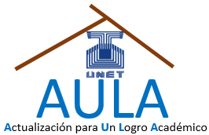

La matemática y la física son ciencias fundamentales, pues están presentes en todo lo que hacemos de manera cotidiana y profesional, pues con ellas resolvemos infinidad de problemas, como, por ejemplo, las diferentes proporciones de ingredientes que deben usarse para elaborar un pastel, o la cantidad de material que deben emplearse para fabricar un recipiente, la rapidez máxima que debe llevar un auto al tomar una curva o la fuerza de sustentación de un avión, etc. La enseñanza de estas disciplinas resulta más sencilla si se emplea la didáctica adecuada. En este sentido, los profesionales encargados de su instrucción deben propiciar y crear en el aula de clases entornos que aliente y motiven a sus aprendices a percibirlas como disciplinas sencillas, emocionantes e importantes, y no como asignaturas complicadas de aprender. El reto de los profesores de matemáticas y física es formar alumnos capaces de ver soluciones donde otros vean problemas. Si el discente se reconoce con habilidades para resolver problemas cotidianos, probablemente será capaz de desenvolverse adecuadamente en el mundo tan competitivo en el que le tocará vivir. Actualmente, ciencias como la física, la química y matemáticas atraviesan serias dificultades en nuestro país, las cuales se han ido incrementando a través del tiempo, principalmente por la carencia de programas de actualización que le ayuden a mejorar la praxis para su enseñanza y aprendizaje. Conscientes de tal problemática, los profesores de los Laboratorios de Matemática Pura y Aplicada, Física Aplicada y Computacional y Bioingeniería de la UNET han creado el programa Actualización para Un Logro Académico (AULA) el cual está conformado por cursos, talleres, diplomados con la finalidad de formar académicamente con metodologías y estrategias actualizadas a docentes de educación básica, media y diversificada tanto el área de las matemáticas como en la física.
El proyecto AULA contempla realizar diferentes actividades con los estudiantes y docentes, las cuales estarán centradas en el empleo de las Nuevas Tecnología de la Información y la Comunicación. En este sentido, su sede estará ubicada en las instalaciones del CEDIC (Centro de Enseñanza y Divulgación de las Ciencias), dependencia adscrita al Departamento de Matemática y Física. El Proyecto AULA, tiene proyectado como meta a corto plazo iniciar a los estudiantes en conversatorios en difrentes temas de matemáticas, física y química con miras a recatar los programas de Ciencias que anteriormente llevaba a cabo la Asociación Venezolana para el avance de la Ciencia (ASOVAC).
Curso preparatorio para el inicio de la carrera universitaria
Este curso tiene como propósito desarrollar y enseñar las principales habilidades y aptitudes en los estudiantes, tanto en el área de las ciencias fundamentales como en el área verbal, para que puedan desempeñarse adecuadamente en tareas o actividades determinadas, así mismo, ayudará a los estudiantes a desarrollar las competencias necesarias para comprender y resolver problemas complejos, tomar decisiones y comunicarse de manera efectiva y asertiva. El Curso preparatorio para el inicio de la carrera universitaria estará enmarcado dentro del Proyecto AULA (Actualización para Un Logro Académico), el cual está conformado por cursos, talleres, diplomados con la finalidad de formar académicamente con metodologías y estrategias actualizadas tanto a estudiantes como docentes de educación básica, media y diversificada tanto el área de las ciencias fundamentales. El proyecto AULA contempla realizar diferentes actividades con los estudiantes y docentes, las cuales estarán enmarcadas en el empleo de las Nuevas Tecnología de la Información y la Comunicación.